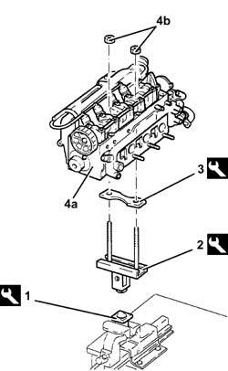
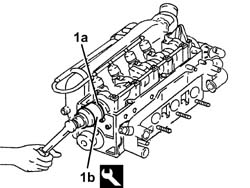

1036B14 CAMSHAFT IN CYLINDER HEAD - R.R. WITH HEAD REMOVED
- Path
- Procedures > 10 ENGINE > 1036 TIMING SYSTEM > 1036B OVERHEAD CAMSHAFT (1) IN CYLINDER HEAD (1) > 1036B14 CAMSHAFT IN CYLINDER HEAD - R.R. WITH HEAD REMOVED
- Kind
- repair procedure (removal / refitting; the operation number is the code)
- Applies to
- engines: 1.9 JTD 8v; all production periods
- Interactive page
- https://sloeber94.github.io/elrnDB-fCrm/en/#/194000171
Applies to: engines: 1.9 JTD 8v; all production periods
 Removing
Removing
 Refitting
Refitting1. Place the tool in the vice.
Description | Code | |
|---|---|---|
1 | Support | 1.820.012.000 |
2. Fit the tool.
Description | Code | |
|---|---|---|
2 | Support | 1.820.258.000 |
3. Fit the tool.
Description | Code | |
|---|---|---|
3 | Spacer | 1.820.267.000 |
4. Position the cylinder head (4a) on the support tools and fasten it using the nuts (4b).

Applies to: engines: 1.9 JTD 8v; all production periods
1. Undo the bolts (1a) and remove the vacuum unit (1b) complete with O-ring (1c).

Applies to: engines: 1.9 JTD 8v; all production periods
1. Undo the driven toothed pulley bolt (1a) using the tools (1b).
Description | Code | |
|---|---|---|
1b | Counter-torque | 1.822.146.000 |
Description | Code | |
|---|---|---|
1b | Counter-torque | 1.822.156.000 |
2. Remove the toothed driven pulley.

Applies to: engines: 1.9 JTD 8v; all production periods
1. Undo the camshaft cap bolts.
2. Remove the camshaft support lubrication pipe.
3. Remove the camshaft caps.
4. Remove the camshaft.
5. Remove the camshaft front oil seal.

Applies to: engines: 1.9 JTD 8v; all production periods
Refitting
RemovingPlace the camshaft in its housing.
Place the camshaft caps in their housings.
Place the camshaft supports lubrication pipe in its housing.
Tighten the camshaft cap bolts to the recommended torque.
Fastening | Component | Ø | Value (daNm) | |
|---|---|---|---|---|
- | Bolt | CAMSHAFT CAPS | M7 | (Cylinder head side) 1.3 - 1.6 |
1. Fit the a new crankshaft front oil seal (1a) using the tool (1b).
Description | Code | |
|---|---|---|
1b | Fitting tool | 1.821.228.000 |

Applies to: engines: 1.9 JTD 8v; all production periods
Place the toothed driven pulley in its housing.
Tighten the toothed driven pulley bolt to the recommended torque using the tools.
Fastening | Component | Ø | Value (daNm) | |
|---|---|---|---|---|
- | Bolt | TIMING DRIVEN PULLEY | M12 | (Cylinder head side) 10.8 -13.2 |
Description | Code | |
|---|---|---|
- | Counter-torque | 1.822.146.000 |
Description | Code | |
|---|---|---|
- | Counter-torque | 1.822.156.000 |
Place the vacuum unit in its housing with the O-ring and secure it by tightening the bolts to the recommended torque.
Fastening | Component | Ø | Value (daNm) | |
|---|---|---|---|---|
- | Bolt | VACUUM PUMP FOR BRAKES | M8 | (Cylinder head side) 2.1 - 2.6 |
Remove the cylinder head from the support tools.
Remove the cylinder head support tools from the vice and put them down.